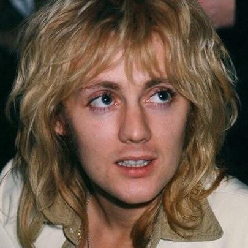
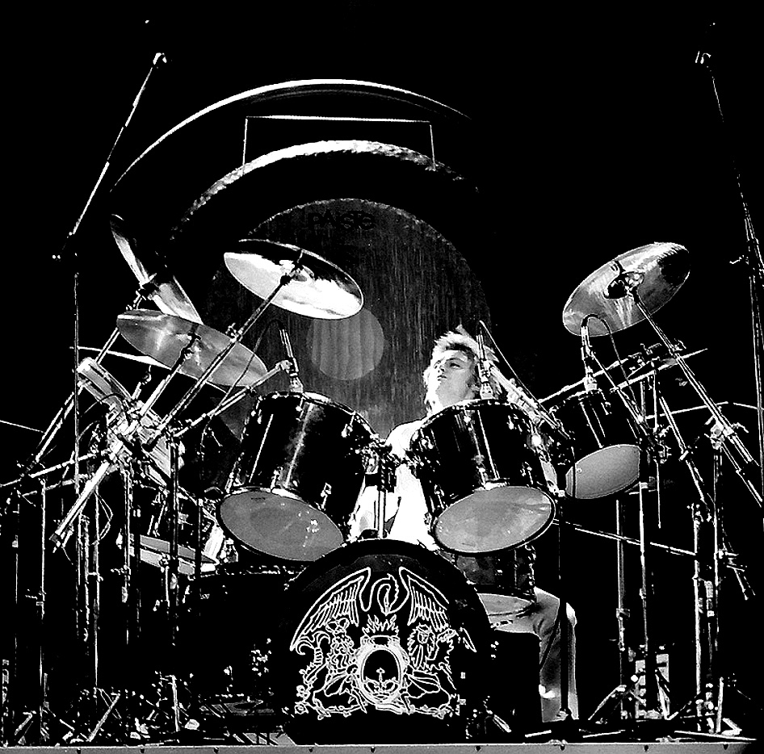

Roger Taylor
If Brian May was the architect and Freddie Mercury the flamboyant soul, Roger Taylor was the band’s raw, high-voltage engine. Known for his "rock star" looks, his raspy, Rod Stewart-esque vocals, and his incredibly powerful drumming style, Taylor was the rebel of the group—the one who pushed Queen toward a harder, faster, and more modern edge.
The High-Octane Drummer
Roger Taylor’s drumming was never just about keeping time; it was about creating a wall of sound. His style is characterized by its immense power, heavy use of the snare, and his signature open-hi-hat "hiss."
The "Roger Taylor Sound": He often used large, resonant drums (notably North drums or Ludwig kits) to achieve a stadium-filling boom.
Technicality Meets Power: Tracks like "Seven Seas of Rhye" and "Stone Cold Crazy" showcase his ability to blend speed with a heavy, driving rhythm that pre-dated much of modern thrash metal.



The Voice of the Stratosphere
One of Queen’s most distinctive features was their three-part vocal harmony. While Freddie provided the core and Brian the middle, Roger was responsible for the stratospheric high notes.
His falsetto is the "secret weapon" behind the operatic sections of "Bohemian Rhapsody."
Beyond harmonies, he was a lead singer in his own right, providing the grit and soul for songs like "I'm in Love with My Car" and "Modern Times Rock 'n' Roll."
The Songwriter of the Future
Roger Taylor was often the most forward-thinking member of the band. While others looked to opera or Vaudeville, Roger looked to the future of pop and protest.
"Radio Ga Ga": Born from a comment his young son made about the radio, this song became a global anthem and a commentary on the changing face of music media.
"A Kind of Magic": Originally written for the film Highlander, this track became one of the band's most polished and enduring 80s hits.
Social Commentary: Roger was never afraid to be political, writing songs like "The Prophet's Song" and "Under Pressure" (co-written) that touched on human nature and social struggle.
The Rebel and the Solo Artist
Roger was the first member of Queen to release a solo single ("I Wanna Testify," 1977) and the first to form his own side-project, The Cross. This allowed him to explore his love for hard rock and contemporary social issues outside the "Queen" brand. His solo work reflects his restless creative energy and his desire to stay connected to the evolving music scene.
Keeper of the Flame in 2026
In 2026, Roger Taylor remains an active, vital force in the music world. He is the co-curator of the Queen legacy alongside Brian May, but he has never stopped being a solo artist.
Modern Sound: He continues to release solo material, often characterized by its deep, reflective lyrics about the state of the world.
The Mentor: Through the "Queen Extravaganza" and his work with younger drummers, he ensures that the art of classic rock drumming is preserved for new generations.